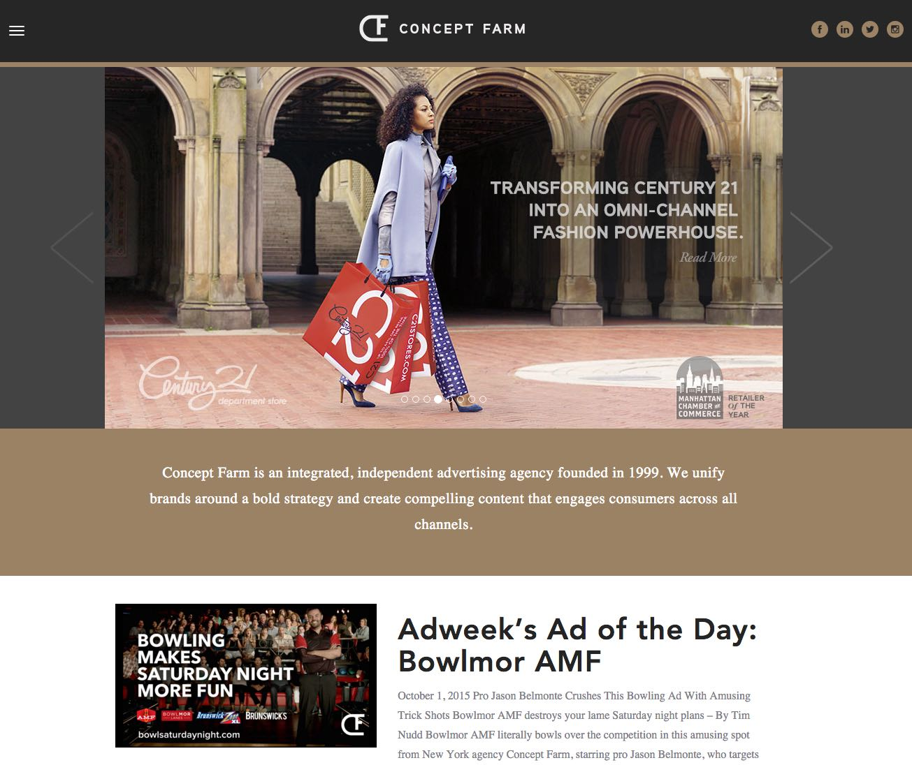
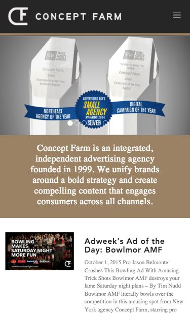

Recent Work
This is a small selection of projects I've worked on. Both the Cinemax and La Prairie projects I was part of a much larger team while the rest are Wordpress projects in which I was responsible for the full LAMP stack. I've included both mobile and desktop screens where appropriate. To visit a project just click or tap on the screen shot.
Cinemax

La Prairie

Concept Farm
 Overall Murals


Rotary Club